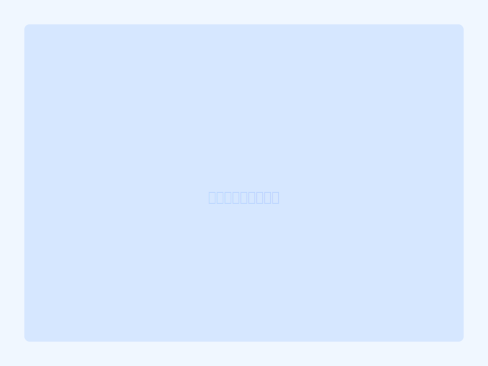

マルチポーチ（1個）
¥1,000
多機能なマルチポーチ。小物整理から旅行まで、活躍シーンは無限大。毎日の相棒に。
商品説明
海とまちをテーマにした、使い勝手の良いマルチポーチです。コスメ、ステーショナリー、薬、小物類などをコンパクトに整理できます。旅行時の持ち運びにも最適。しっかりした作りと上質な素材を使用しているため、長く愛用できます。バッグの中をスッキリ整理して、毎日をもっと快適に。
素材 / 仕様
- 素材：綿麻混紡（表面）、中綿入り
- サイズ：約W18cm × H10cm × D8cm
- ファスナー：YKK 製、スムーズに開閉
- 内ポケット：1つ
- 耐久性：優良